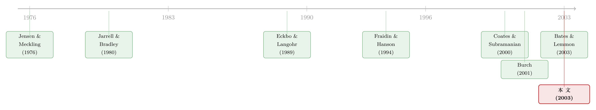

分手费，到底是给股东上锁，还是替股东撑腰？
本文读的是 Officer (2003, Journal of Financial Economics)：在并购合同里写进一条「目标方终止费 (target termination fee)」，并不会像直觉以为的那样压低股东拿到的价钱——恰恰相反，带终止费的交易溢价平均高出约 4%、成交概率高出近 20%。终止费更像是替股东「撑腰」的契约工具，而不是管理层给自己「上锁」的护身符。
1 一桩「分手费」引出的悬念
2000 年，Warner-Lambert 临阵悔婚，转投 Pfizer，结果要向被甩的 American Home Products 赔上一笔惊人的终止费——这件事一度成了《华尔街日报》的头版谈资。再往前看，SDL 若想中途撤出与 JDS Uniphase 的合并、改嫁他人，得掏出 $10 亿，CNNFn 当年戏称这给「分手是件难事」赋予了全新的含义。
这些数字大得吓人，于是一个很自然的疑问浮上来：目标公司的管理层，到底图什么，要在合同里答应给收购方一笔分手费？这笔费用，对目标公司的股东，究竟是好事还是坏事？
直觉给出的第一个答案往往是负面的。你可以这样讲一个故事：一位「被迫」要卖掉公司、又舍不得自己位子的目标方 CEO，挑中了一个肯保他官位的「白衣骑士 (white knight)」，然后用一纸终止费把门反锁上——任何后来的竞购者，想要再插一脚，都得先替这位 CEO 把分手费垫上，平白抬高了收购成本。于是潜在的竞价者望而却步，本该热热闹闹的拍卖被掐灭，股东少拿了溢价，而管理层换来了职位安稳。这就是经典的管理层堑壕 (managerial entrenchment) 叙事。
Officer (2003) 这篇文章，做的事情说来朴素：把这个「听起来很对」的故事，拿到接近 1997–1999 年间近三分之二都带终止费条款的并购样本里，认认真真地检验一遍。而结论，恰恰是个反转。
2 两个针锋相对的假说
文章把所有的争论，干净地拆成了两个假说。
首先，是代理成本假说（H1）。 这一支沿袭的是 Jensen and Meckling (1976)、Jensen (1986) 一路下来的代理问题传统：管理层为自己谋利。在并购的情境里，「私利」最赤裸的形式就是职位保障。目标方管理层用终止费抬高竞购者的进入成本，绕开了一场本可能抬价的拍卖；股东付出的代价，是那份「本来能在竞价中赚到、却因竞争被掐灭而消失」的溢价。在这套逻辑下，预测是清楚的：带终止费的交易，溢价应该更低。
接着，一个自然的问题是——如果终止费真这么「坏」，为什么连特拉华州的法院都在有条件地容许它？为什么市面上还有那么多形态各异的终止费条款？于是第二个假说登场。
契约效率假说（H2）： 终止费是用来解决买卖双方之间一个真实存在的契约难题的。想想看，从签约到真正完成合并，要等监管和股东批准——中位数差不多要 6 个月（见 Officer 自己另一篇工作论文）。在这漫长的等待里，竞争对手可以搭便车 (free ride)：白白看着首个收购方披露出来的协同来源、对目标资产的整合计划，然后拿这些信息去出一个更高的价。一个没有保护的首发收购方，没法把自己「生产信息」的努力完全内部化。
这套论证，其实和 Jarrell and Bradley (1980) 如出一辙——他们当年论证 1968 年 Williams Act 的「通知—暂停」条款，相当于给并购活动征了一道「税」，因为它让对手有时间搭便车。Officer 把同样的逻辑搬到了股东批准与 Hart-Scott-Rodino 反垄断审查上。于是终止费的角色就反过来了：它是一道「价格」，专门用来惩罚搭便车，从而鼓励收购方放心地披露有价值的私人信息（比如它打算怎么经营目标公司的资产），帮股东看清这桩合并到底值不值。
这里有一个常被忽略、却极有说服力的细节。许多终止费（比如 Compaq/Digital 那一笔）的设计是：哪怕目标公司管理层只是「单方面改主意、想继续独立」，在没有任何竞争对手出现的情况下，照样要付这笔费。如果终止费真是为了护着「白衣骑士甜心交易」，那为什么管理层决定不卖了、保持独立，还得挨这一刀？这个条款结构，恰恰戳破了代理假说，而与契约假说严丝合缝——因为只要管理层中途反悔、回到独立状态，收购方披露的私人信息就被「白嫖」了。
那么，怎么在两个假说之间裁决？关键的一步在于：别去猜管理层心里在想什么，去看结果。
3 识别策略：不去测「动机」，去测「结果」
这篇文章方法论上最聪明的地方，是它绕开了一个老大难。
以往研究（比如 Burch, 2001）想直接给「管理层动机」找代理变量——用目标公司的自由现金流 (free cash flow) 或机构持股比例去衡量代理成本。但这些代理变量在实践中往往不灵：自由现金流和经营盈利能力高度相关，而盈利能力又跟潜在收购方的数量挂钩，根本分不清谁是谁；机构持股本该（在代理假说下）与锁定条款使用负相关，结果数据里偏偏是正相关。代理变量越用越糊涂。
Officer 索性不测动机，转而去测三个可观测的结果：
- 收购方出的溢价 (premium)；
- 是否出现竞争性出价 (competing bid)；
- 交易最终是否成功完成 (success / completion)。
逻辑链条是这样接起来的：如果代理问题是终止费的主因，那么带终止费的交易溢价应该更低、竞争应该被有效压制；如果契约效率是主因，那么溢价不该更低，反而该更高——因为目标公司若有讨价还价的本事，就能从「信息披露创造的租金」里分一杯羹。这个「信息披露创造可分享租金」的猜想，与 Eckbo and Langohr (1989) 的发现一脉相承：他们记录到，法国提高要约收购的信息披露要求（且没有延长最短要约期）之后，观测到的收购溢价显著上升了。
但真正关键的一步在于：内生性 (endogeneity)。 溢价和合同条款（含不含终止费）是在同一张谈判桌上、由买卖双方一起谈出来的——两者都不是真正外生的。所以哪怕你跑一个简单的 OLS，把溢价对终止费虚拟变量一回归，得到一个正系数，你也不能轻易说「终止费导致了高溢价」：反过来「高溢价的交易更倾向于配上终止费」也会产出同样的正相关。
为此，Officer 用了一套联立方程组 (simultaneous equations system)——这一支的方法论根子在 Heckman (1979) 的样本选择与 Maddala (1983) 的受限因变量处理。让终止费的使用与溢价互为内生变量，去检验那条方向性关系是否稳健：目标方管理层，是否真的能借一纸终止费改善自己的谈判地位、从收购方那里多榨出溢价。
（关于「用错了数据、把终止费的因果方向带偏二十年」的另一桩公案，可参见《终止费到底是「锁门」还是「关灯」？》；关于股东话语权如何反过来抬高并购溢价，可参见《权力天平倒过来那一年》。）
4 数据：一笔会赔钱的「分手」
在进入结果之前，先把终止费这件东西本身讲清楚，因为它的「经济内容」并不整齐划一。
文章用 Compaq/Digital（1998 年 1 月）和 COMSAT/RSI（1994 年 1 月）两份真实合同做了对照。Compaq/Digital 里，Digital 若撤回或恶化对合并的支持、或股东转投别家，要付 Compaq $2.4 亿，约合 Digital 股权市值的 3.5%；而且哪怕没有竞争对手、Digital 只是「自己改主意想独立」，照样要付。COMSAT/RSI 则不同：RSI 只在「12 个月内同意被别家收购」时才付 $500 万（约 RSI 股权的 4.5%），单纯改主意保持独立不受罚。
两者有个共同点值得记住：终止费之所以被称作「惩罚性 (punitive)」，是因为几乎所有并购合同里都另有条款，单独补偿被甩一方「有据可查的实际成本」（Compaq/Digital 里上限 $2500 万，COMSAT/RSI 里 $250 万）。所以终止费是在「实报实销的成本」之上，额外给收购方的一笔补偿——它要补的，正是那份没法实报实销的东西：管理层的时间、机会成本，以及（按契约假说）被披露出去的信息价值。
样本层面，文章聚焦 1997–1999 年间宣布的并购，其中近 2/3 含目标方终止费条款。它只看目标方终止费，部分原因是 Coates and Subramanian (2000) 报告：锁定期权 (lockup) 的使用频率大约只有现金终止费的一半；而收购方终止费 (bidder termination fee) 远不如目标方终止费常见，且多出现在「对等合并 (merger of equals)」里，此时「谁是收购方、谁是目标」几乎没有意义。
5 主要结果：三个反转
把三个结果摆在一起看，代理假说几乎全线落败。
第一，溢价更高，不是更低。 在控制了相关的交易特征之后，使用目标方终止费与大约高出 4% 的收购溢价相关联。这是对代理假说最直接的反驳——如果终止费是管理层为保职位而压制竞争的工具，溢价该往下走才对。
第二，成交率大幅提高。 带终止费的交易，成功完成的概率平均高出近 20%。换句话说，股东不仅拿到的溢价更高，而且更经常真正拿到这份溢价——交易不至于在中途黄掉。对一个手握待售公司的股东来说，这是实打实的好处。
第三，竞争确有被压制，但小到几乎不重要。 带终止费的交易，出现竞争性出价的概率确实低了约 3%（相对于全样本 5% 的竞争率）。乍一看这是代理假说的弹药，但 Officer 给出了两条让它「泄气」的理由：
- 其一，这点压制效果主要由相关的交易和收购方特征驱动——终止费更可能出现在「友好交易 (friendly deal)」里，而友好交易本就竞争少；并不是终止费本身的「锁门」效果。
- 其二，经济意义太小。即便真少了
3%的竞争性出价概率，对目标股价的冲击也微乎其微——因为第二口价的「加价 (bid jump)」平均只有目标股权市值的约14%（Betton and Eckbo, 2000）。3% × 14%的期望损失，和高出的4%溢价、20%的成交率一比，根本不在一个量级。
于是反转完成：终止费压制竞争的那一点点效果，被它带来的更高溢价和更高成交率远远盖过。综合证据指向一句话——目标方终止费的使用，至少无害，很可能有益于目标股东。
6 文献脉络
把这条线索捋一捋，会看到一个清晰的演进。
源头在代理理论：Jensen and Meckling (1976) 和 Jensen (1986) 奠定了「管理层可能损股东而自肥」的框架，这是代理假说的根。与此同时，另一条「信息搭便车」的线索由 Jarrell and Bradley (1980) 点亮——他们论证披露要求会让对手免费搭车，给并购征了一道税；Eckbo and Langohr (1989) 随后用法国的自然实验给出实证：披露要求一旦提高，溢价随之上升。这正是契约假说「信息创造可分享租金」的经验底座。
接着，法律与理论开始直接对话终止费本身。Fraidin and Hanson (1994) 援引科斯定理，论证只要交易成本不至于高得离谱，终止费就不会把更高估值的收购方挡在门外（即不损害配置效率）。Coates and Subramanian (2000) 则用「买方扭曲」反驳了这一点，并给出（多为单变量的）证据：锁定与终止费显著提高了在位收购方拿下目标的概率，却与竞争没什么关系。Burch (2001) 研究锁定期权，发现含股票锁定的交易给目标股东带来更高的异常公告收益，支持「股东利益」一侧。

Officer (2003) 站在这条线的「实证收口」位置：它是最早直接给出终止费对溢价影响证据的论文之一，也是第一篇用多变量方法同时检验终止费对竞争与成交结果影响的文章，并且认真处理了前人多半忽略的内生性。值得一提的是，与它几乎同时、彼此最初互不知情的 Bates and Lemmon (2003) 得到了相同的结论——终止费交易的股东受益于更高的成交率与溢价，二者都把这解读为终止费作为高效契约工具的证据。两篇文章在同一期 JFE 上互为印证，是这条脉络一个漂亮的收束。
7 评论与延伸（Q&A + 研究方向）
(a) 几个可能的疑问
Q：终止费和锁定期权 (lockup) 到底有什么区别？
两者功能相近，都是给在位收购方的保护。区别在于：锁定期权授予收购方一个对目标普通股或某项重要资产的看涨期权，只在目标方主动终止、改投他人时才可行权；而终止费是一笔固定现金。Coates and Subramanian (2000) 发现中位数的股票锁定是对目标
19.9%股权的期权——因为多数交易所要求，凡涉及超过20%股本的契约条款都得经股东投票。本文只聚焦终止费，因为锁定的使用频率大约只有终止费的一半。
Q：那 4% 更高的溢价，会不会只是「好交易自带终止费」的假象？
这正是内生性的核心担忧，也是本文用联立方程组要回答的问题。在让终止费与溢价互为内生之后，方向性关系依然稳健——支持「管理层借终止费改善谈判地位、多榨溢价」的因果解读，而非单纯的相关。当然，联立方程的识别要靠工具/排除约束，这一点本身仍可被质疑（见下）。
Q：竞争性出价真的被压制了，这难道不是代理假说成立的证据吗？
是有
3%的压制，但有两层削弱。一是这效果主要由「终止费更常出现在友好交易」这一相关特征驱动，而非费用本身；二是经济意义极小——第二口价平均只加价目标市值的约14%，3%×14%的期望损失，和高出的4%溢价完全不在一个量级。
Q：为什么「中途改主意保持独立也要付费」这条款这么重要？
因为它是区分两个假说的判别性证据。若终止费是为护住「甜心交易」，管理层决定不卖了就不该挨罚；可现实中（如 Compaq）此时照付。这与代理假说矛盾，却与契约假说一致——管理层一旦反悔回到独立，收购方披露的私人信息就被白白「搭了便车」。
Q：那收购方终止费 (bidder termination fee) 呢，是不是对称的故事？
不太是。本文指出收购方终止费远不如目标方终止费常见，且带这种费用的交易，收购方与目标方市值之比显著更低——说明它们多出现在「对等合并」里，此时「谁是收购方、谁是目标」几乎没有意义，更像一份互惠协议的一半。Bates and Lemmon (2003) 对此有更细的考察。
Q：这篇 2003 年的结论，在「股东话语权上升、维权投资者活跃」的今天还成立吗？
这是个开放问题。本文的样本是
1997–1999，彼时机构维权远不如今天。当股东能更强地约束管理层时，终止费的「代理」用途本就更受抑制，「契约」用途可能更突出——但也可能因为对手交易 (jump bid) 生态变化而改变。这正是后续值得复检的地方。
(b) 几个可能的研究问题与提案
1. 终止费与信用市场：债权人怎么看这道「价格」？
【经济故事】终止费提高了成交确定性、也改变了交易的风险分布。若一桩杠杆收购更可能成交，目标/收购方的债券利差应当对终止费条款有反应——它既是成交概率信号，也是一笔或有现金流出。 【可行性】中。需要把并购合同的终止费条款（SDC/手工收集）匹配到 TRACE 债券交易与发行人信用利差，用事件研究看公告窗口的利差变化。识别难点同样是内生性——可借鉴本文的联立方程或寻找条款外生变动（如法院判例冲击）。
2. 判例冲击作为外生变动：Brazen v. Bell Atlantic (1997) 的断点。
【经济故事】Coates and Subramanian (2000) 指出 1997 年 Brazen 判决（在费用规模可控的前提下）强力背书了终止费的合法性。这是一次对「终止费可执行性」的外生提升，可用来识别终止费使用对溢价与成交率的因果效应。 【可行性】中高。围绕判决时点做断点/事件设计，比较判决前后终止费使用率与溢价的跳变。难点是同期其他并购监管变化的混淆，需要安慰剂检验。
3. 外资收购方与信息搭便车的强弱。
【经济故事】契约假说的核心是「信息搭便车」。若收购方是外资、信息更难被本地对手复制和搭便车，那么终止费的「保护信息」价值应当更低、使用率也应更低。这能给契约机制提供一个横截面检验。 【可行性】中。需跨境并购样本（SDC）+ 收购方国籍，按「信息可复制性」分组比较终止费使用与溢价。识别靠横截面异质性，结论是相关性证据，doable 但因果偏弱。
4. 终止费规模的「最优区间」。
【经济故事】法院只容许「与可观的加价相匹配」的终止费。这意味着费用占比 (fee/equity) 可能存在一个既能威慑搭便车、又不至于挡住更高估值者的最优区间。费用过低无威慑、过高伤配置效率。 【可行性】高。数据现成（费用金额/目标市值可直接算），可做费用占比与成交率、溢价、竞争率的非线性（分段/二次项）回归，找拐点。纯描述性证据，但很干净，容易上手。
8 我的判断与参考文献
贡献。 这篇文章的价值，不在于某个惊人的系数，而在于它用一个朴素却正确的研究设计，把一个被直觉绑架了的问题扳回了正轨：不去测无法观测的「管理层动机」，转而去测可观测的溢价、竞争与成交结果，并诚实地处理了内生性。+4% 溢价、+20% 成交率、被层层削弱的 3% 竞争压制——三个结果叠加，结论稳健而不取巧。它也漂亮地示范了，「条款本身的设计细节」（中途独立也要付费）如何能成为区分假说的判别性证据。
对识别的担忧。 最大的软肋在联立方程的识别——它依赖于一组能排除性地影响终止费、却不直接影响溢价的工具/约束，而这类工具在并购情境里天生稀缺，文中的排除约束是否真正成立，读者只能部分信任。其次，样本期 1997–1999 偏短、偏特定，外推到今天需要谨慎。第三，竞争被「友好交易」混淆这一点，本文用「主要由相关特征驱动」打发掉了，但友好/敌意本身就是内生选择的结果，处理得还不够彻底。
后续想看到的。 我最想看到的是用一次干净的外生冲击（如上面提到的 Brazen 判例断点）来复检因果方向，以及把这套逻辑延伸到信用市场——债权人对终止费的定价，可能藏着一条本文没碰过的暗线。
参考文献
- Bates, T., Lemmon, M. (2003). Breaking up is hard to do? An analysis of termination fee provisions and merger outcomes. Journal of Financial Economics 69, in press.
- Betton, S., Eckbo, B. (2000). Toeholds, bid jumps, and expected payoffs in takeovers. Review of Financial Studies 13, 841–882.
- Burch, T. (2001). Locking out rival bidders: the use of lockup options in corporate mergers. Journal of Financial Economics 60, 103–141.
- Coates IV, J., Subramanian, G. (2000). A buy-side model of M&A lockups: theory and evidence. Stanford Law Review 53, 307–396.
- Eckbo, B., Langohr, H. (1989). Information disclosure, methods of payment, and takeover premiums: public and private tender offers in France. Journal of Financial Economics 24, 363–403.
- Fraidin, S., Hanson, J. (1994). Toward unlocking lockups. Yale Law Journal 103, 1739–1834.
- Heckman, J. (1979). Sample selection bias as a specification error. Econometrica 47, 153–161.
- Jarrell, G., Bradley, M. (1980). The economic effects of federal and state regulations of cash tender offers. Journal of Law and Economics 23, 371–407.
- Jensen, M. (1986). Agency costs of free cash flow, corporate finance, and takeovers. American Economic Review 76, 323–329.
- Jensen, M., Meckling, W. (1976). Theory of the firm: managerial behavior, agency costs, and ownership structure. Journal of Financial Economics 3, 305–360.
- Maddala, G. (1983). Limited-Dependent and Qualitative Variables in Econometrics. Cambridge University Press, Cambridge.
- Officer, M. (2003). Termination fees in mergers and acquisitions. Journal of Financial Economics 69, 431–467.